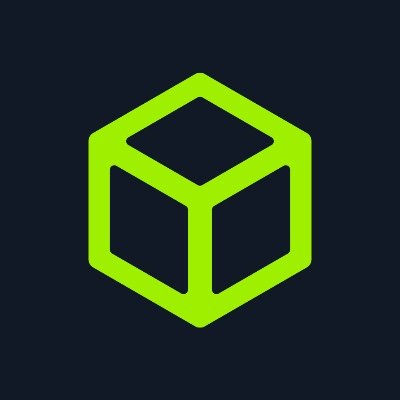
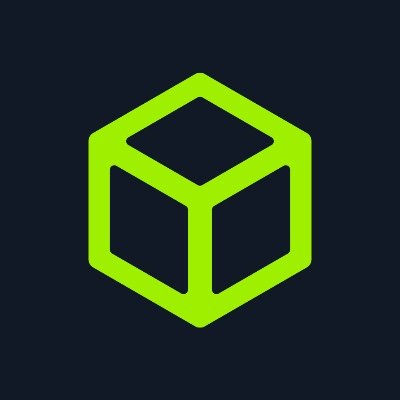

|  | ||
| GitHub | HackTheBox |
Mi nombre es Nil, y actualmente estoy estudiando CFGM de Sistemas Microinformáticos y Redes. He creado esta página para que se pueda apreciar mi pasión por la ciberseguridad y dedicación en el campo, así como también poder ayudar a quien lo necesite con los writeups y herramientas que proporciono. Actualmente tengo 62 máquinas resueltas en HackTheBox y 0 resueltas en VulnHub.
A continuación dejo mis perfiles y mail para cualquier cosa.
|  | ||
| GitHub | HackTheBox |